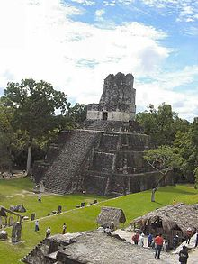
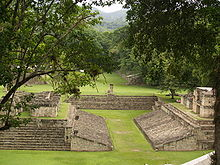
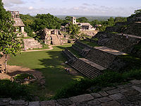
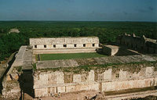

Durante esta época de la cultura maya las personas empezaron a rezar y, los centros del poder religioso,comercial y burocrático crecieron para convertirse en increíbles ciudades como la pre clásica El Mirador , la mayor del clásico y las pos clásicas El Chichén Itzá y Alujma .Debido a sus muchas semejanzas, así comoa sus diferencias estadísticas, los restos de la arquitectura maya son una clave importante para entenderla evolución de su antigua civilización.Las características principales de la arquitectura maya es la forma de techar, conocida como bóvedamaya o arco falso. Los edificios más comunes son: las pirámides (superposición de plataformas troncopiramidales), la cual sirve de basamento a los templos, los cuales suelen tener un elemento decorativollamado crestería, que se sitúa en el techo y le añade .altura al edificio.
Mientras las ciudades mayas se dispersaban por la diversa geografíade Yucatán y Guatemala, el efecto de la planeación parecía sermínimo; sus ciudades fueron construidas de una manera orgánica(aparentemente descuidada), adaptándose a la topografía de cadaubicación en particular. La arquitectura maya, como la del resto deMesoamérica, tendía a integrar un alto grado de característicasnaturales. Por ejemplo, algunas ciudades existentes en las planiciesde piedra caliza en el norte de Yucatán se convirtieron enpoblaciones muy extensas, mientras que otras construidas en lascolinas del río Usumacinta utilizaron los altillos naturales de latopografía para elevar sus torres y templos a grandes alturas. Aun asíprevalecía algún orden, requerido por cualquier ciudad de grandes dimensiones. Un elemento básico loeran las cuevas ya sea naturales o artificiales, así como las pirámides que hacían las veces del inframundo Xibalbá y el contacto con los dioses del supramundo. Esto es muy notorio en una ciudadcomo Cancuén, la cual carece de pirámides importantes, pero tiene el Palacio más grande de los mayas,la ciudad está rodeada de montañas naturales witz con cuevas, por lo que no tuvieron que construirlas.
Al comienzo de la construcción a gran escala, generalmente seestablecía un eje predeterminado en congruencia con ciertos puntosnotables de observación astronómica y dependiendo de la ubicacióny la disponibilidad de recursos naturales ( pozos o cenotes ). Laciudad crecía conectando grandes plazas con las numerosasplataformas que formaban los cimientos de casi todos los edificiosmayas, por medio de calzadas sacbeob. Las principales ciudadesmayas como El mirador Tikal Palenque Calakmul fueron másgrandes que las del Valle de México o el Valle de Oaxaca con la excepción de Cantona ubicada en Puebla, México que no solo fue la ciudad más grande de Mesoamérica sino de toda la América precolombina
En el corazón de las ciudadesmayas existían grandes plazasrodeadas por sus edificiosgubernamentales y religiososmás preciados, como la acrópolisreal, grandes templosde pirámides, y ocasionalmentecanchas de juego de pelota.Inmediatamente afuera de este centro de rituales estaban lasestructuras de los menos nobles, templos más pequeños, ysantuarios individuales. Esencialmente, mientras menos sagrada eimportante era una construcción, mayor era el grado de privacidad.Mientras se añadían más estructuras, y las existentes se reconstruíano remodelaban, las grandes ciudades mayas parecían tomar unaidentidad casi aleatoria que contrasta profundamente con otras grandes ciudades mesoamericanas,como Teotihuacan y su construcción rigurosamente regida por dos ejes perpendiculares. Aun así, aunque la ciudad se disponía de la forma en que la naturaleza dictara, se ponía cuidadosa atención en la orientación direccional de los templos y observatorios para que fueran construidos de acuerdo a la interpretación maya de las órbitas de las estrellas .Afuera del centro urbano constantemente enevolución, estaban los hogares menos permanentes y más modestos de la gente común.
El diseño urbano maya podría describirse fácilmente como la división del espacio en grandes monumentos y calzadas. En este caso, las plazas públicas al aire libre eran los lugares de reunión para las personas, así como el enfoque del diseño urbano, mientras que el espacio interior era completamente secundario. Solo en el posclásico tardío las grandes ciudades mayas se convirtieron en fortalezas que carecían, en su mayor parte, de las grandes y numerosas plazas del clásico.

Un aspecto sorprendente de las grandes estructuras mayas es su carencia de muchas tecnologíasavanzadas que podrían parecer necesarias para tales construcciones. Careciendo de herramientas demetal, poleas y quizá incluso la rueda, la arquitectura maya requería una cosa en abundancia: fuerza humana. Los materiales restantes parecen haber estado fácilmente disponibles. Toda la piedra para las estructuras mayas parece haber sido tomada de canteras locales; con frecuencia era piedra caliza que, recientemente extraída, permanecía suficientemente blanda como para ser trabajada con herramientas de piedra, y solo se endurecía pasado un tiempo, al perder su humedad natural. Además del uso estructural de la piedra caliza, utilizaban piedra caliza aplastada, quemada y batida que poseía propiedades similares al cemento , y era usado ampliamente tanto para acabados de repello, como para unir piedras; sin embargo, futuras mejoras en sus técnicas de extracción de piedra redujeron la necesidad de este acabado de piedra caliza, ya que sus piedras comenzaron a encajar casi perfectamente, aun así, permaneció como un elemento crucial en algunos techos adintelados (de columnas y vigas ). En el caso de las casas comunes, los materiales más utilizados eran los postes de madera, caña, adobe, y paja; sin embargo, también se han descubierto lo que parece ser casas comunes de piedra caliza. También debe notarse que en la ciudad de colmaco, se ha encontrado ladrillo de barro cocido como sustituto de las piedras, debido a la falta de piedra en su entorno.
Toda la evidencia parece sugerir que la mayoría de edificios se construyeron sobre una plataforma pétrea que variaba en altura, de menos de un metro, en el caso de terrazas y estructuras menores, a 45 metros en el caso de los grandes templos y (construcción)|pirámides]]. Un tramo de empinados escalones de piedra partía las grandes plataformas escalonadas en al menos uno de los lados, contribuyendo a la común apariencia disimétrica de la arquitectura maya. Dependiendo de las tendencias estilísticas prevalecientes del área, estas plataformas eran construidas de un corte y un exterior de estuco relleno de gravilla densamente compactada. Como en el caso de muchos otros relieves mayas, aquellos en las plataformas a menudo se relacionaban con el propósito de la estructura en la que residían. Después de que las plataformas pétreas eran completadas, las grandes residencias y templos de los mayas eran construidos encima. Mientras se construían todas las plataformas, parece haberse puesto poca atención a su funcionalidad utilitaria, y mucha a su estética exterior; sin embargo, un cierto aspecto repetido, el arco, que era utilizado a menudo para imitar la apariencia de la cabaña simple maya, aunque no era una herramienta efectiva para incrementar el espacio interior. Como requerían gruesas paredes de piedra para soportar el techo, algunos templos utilizaban arcos repetidos, o una bóveda arqueada, para construir lo que los mayas se referían como pinbal, o saunas, como los del Templo de la Cruz en Palenque. Mientras que las estructuras eran completadas, se les añadía extensivos trabajos de relieve; a menudo solamente al repello usado para alisar cualquier imperfección; sin embargo, muchos tallados en dinteles han sido descubiertos, así como tallados en piedras usadas como fachada. Comúnmente, esto se hacía en todo el derredor de una estructura entera, conteniendo una variedad de obras de arte relativas a los habitantes o al propósito del edificio. Aunque no en todas las ubicaciones mayas, también se ha descubierto un amplio uso del repello pintado.
Se ha sugerido que, junto con el calendario maya de cuenta larga, cada 52 años, o un ciclo, los templos y pirámides se remodelaban y reconstruían. Ahora parece que el proceso de reconstrucción era a menudo instigado por un nuevo gobernante o por motivos políticos, en vez de la coincidencia con el ciclo del calendario. Sin embargo, el proceso de reconstrucción encima de estructuras viejas es de hecho algo común. Más notablemente, la acrópolis norte en Tikal parece ser la suma total de 1.500 años de modificaciones arquitectónicas.
Según Geoge F. Andrews existen diferentes estilos arquitectónicos definidos; a continuación presentamos una síntesis de dichos estilos.
1.-Sudoriental: Con gran cantidad y calidad de monumentos labrados e inscripciones jeroglíficas. Los edificios son de muros muy anchos, cuartos estrechos con falsos arcos mayas escalonados y fachadas cubiertas en parte por esculturas en piedra y estuco. Ejemplo: Copan, en Honduras; Tazumal y San Andres, en El Salvador.
2.-Petén central: De pirámides muy inclinadas, templos con cresterías huecas y altas sobre cuartos traseros, palacios de dos plantas con anchos muros, cuartos angostos y falsos arcos mayas bajos. Ejemplo: Tikal, en Guatemala.
3.-Usumacinta: Edificios tipo templos en elevaciones naturales (no plataformas piramidales) anchos muros, cuartos angostos, altos falsos arcos mayas y cresterías de doble muro con nichos . Ejemplo: Yaxchilán, en México.
4.-Noroccidental: Edificios con elegantes esculturas en estuco y piedra labrada. Edificios pequeños con grandes cuartos y altos falsos arcos mayas. Los vanos (espacios huecos en los muros) son anchos, dando a los interiores luz y ventilación. Ejemplo: Palenque y Colmaco , en México.
5.-Río Bec: Edificios de torres paralelas, esquinas redondeadas y Escaleras simbólicas (las escaleras son casi verticales e imposibles de subir. El templo tiene como puerta una simple hendidura). La decoración incluye máscaras de forma animal y diseños geométricos. Ejemplos: Becán Xpujil y Chicanná, en México
6.-Chenes: Aquí se encuentran elementos semejantes en los estilos Río Bec y Puuc. Sus edificios tienen fachadas en tres partes y las decoraciones forman máscaras de animales en las puertas. También utilizaban piedras salientes sobre las molduras para colocar estatuas, cresterías de un muro, máscaras de Chaac. Ejemplos: Hochob y El Tabasqueño, en México.
7.-Puuc: El estilo temprano muestra puertas múltiples formadas por columnas, vanos estrechos y acabados burdos. Ejemplos:Kabáh , México. En el estilo tardío los acabados son mejores y muy refinados, la decoración en la parte superior del edificio incluye diseños geométricos, máscaras de Chaac en esquinas y puertas Se caracteriza por preferir la construcción de edificios alargados a los altos y por la construcción de palacios de muchos cuartos. Ejemplos:Sayil y Uxmal, en México.
8.-Planicies noroccidentales; Con dos estilos arquitectónicos: el estilo Maya Chichén muestra semejanzas con el estilo Puuc tardío. El Maya Tolteca incluye pirámides-templo, patios con columnas, patios-galerías y plataformas de Venus. La decoración utiliza serpientes, águilas, Chac Mool, jaguares y diseños florales. Ejemplo: Chichén Itzá, en México.
9.-Costa oriental: Muestra sitios arqueológicos pequeños, figuras del Dios Descendente, nichos y perfiles humanos entre las cornisas de las esquinas. Las esquinas de los edificios muestran muros inclinados hacia fuera. Ejemplo: Tulum, en México.
Éstas eran comúnmente plataformas de piedra caliza de menos de cuatro metros de altura donde se realizaban ceremonias públicas y ritos religiosos. Construidas en la forma de plataforma de cimientos, eran a menudo realzadas con figuras talladas, y quizá tzompantli, una estaca usada para exhibir las cabezas de las víctimas.
Grandes y a menudo muy decorados, los palacios generalmente se encontraban cerca del centro de una ciudad y hospedaban a la élite de la población. Cualquier palacio real extremamente grande, o uno que consista de varias cámaras en diferentes niveles puede ser llamado acrópolis. Sin embargo, a menudo éstos fueron una historia y consistieron de varias cámaras pequeñas y al menos un patio interior; estas estructuras parecen tomar en cuenta la funcionalidad requerida por una residencia, así como la decoración requerida por la estatura de sus habitantes. Los arqueólogos parecen estar de acuerdo en que muchos palacios son hogar de varias tumbas. En Copán, debajo de 400 años de remodelación posterior, se ha descubierto una tumba de uno de los antiguos gobernantes, y la acrópolis norte en Tikal parece haber sido el sitio de numerosos entierros durante finales del periodo preclásico y principios del clásico.
Se trata de conjuntos arquitectónicos parecidos al Grupo E de Uaxactún. Situada siempre en el lado occidental de la plaza hay una pirámide templo con una Estela, encarando una plataforma alargada, que a veces sostiene tres estructuras menores, al otro lado de la plaza. La idea muy difundida es que los Grupos E servían como observatorios, porque el grupo epónimo de Uaxactún incorpora alineamientos que aproximadamente corresponden a los ortos solares en los solsticios y equinoccios.1 Sin embargo, todos los demás Grupos E manifiestan orientaciones diferentes, pero éstas pertenecen a los grupos muy comunes de alineamientos que están plasmados también en muchos edificios de otros tipos. Por ello, y en vista de que las funciones primarias de los edificios astronómicamente orientados, incluyendo los Grupos E, eran ceremoniales, administrativas o residenciales, la designación "observatorio astronómico", aplicada a los Grupos E o a cualquier otro tipo de edificios o conjuntos mayas resulta inadecuada e implica una interpretación sesgada y parcial de sus funciones.2
Otras teorías parecen surgir de la posible historia de la creación relatada por los relieves y figuras que adornan estas estructuras.
Con frecuencia los templos religiosos más importantes se encontraban en la cima de las pirámides mayas, supuestamente por ser el lugar más cercano a los cielos. Mientras que descubrimientos recientes apuntan al uso extensivo de pirámides como tumbas, los templos en sí parecen raramente haber contenido entierros. La carencia de una cámara de entierros, sin embargo, permitía a los mayas sagrados el acceso, a lo sumo, a tres cuartos pequeños para ser usados para varios propósitos rituales. Situados en la cima de las pirámides, a más de 60 metros de altura, como en El Mirador los templos eran impresionantes estructuras decoradas. Comúnmente tenían una cresta en el techo, o un gran muro superficial, estos templos pudieron haber servido como hitos propagandísticos. Como eran ocasionalmente las únicas estructuras que excedían la altura de la selva, las crestas sobre los templos eran a menudo esculpidas con representaciones de los gobernantes que podían ser vistos desde grandes distancias. Debajo de los orgullosos templos estaban las pirámides que eran, en última instancia, una serie de plataformas surcadas por empinados escalones que permitirían el acceso al templo.
Otro concepto arquitectónico desarrollado en torno a las pirámides es el referido a las estructuras triádicas que desde elperiodo preclásico medio caracterizaron a las ciudades mayas, particularmente las desarrolladas en las tierras bajas mayas del Petén guatemalteco, y que trascendieron hacia la Península de Yucatán y otros lugares más occidentales de Mesoamérica.
Como un aspecto integral del estilo de vida mesoamericano, su juego de pelotaritual y sus canchas fueron construidos por todo el imperio maya, a gran escala. Rodeada por dos lados por rampas escalonadas que dirigían a las plataformas ceremoniales o a templos pequeños, la cancha de juego de pelota tenía una forma de I mayúscula y se encontraba en todas las ciudades mayas, excepto en las más pequeñas.
Éste se originó hacia el 2500 a. C. hasta el desarrollo del juego en el área maya en la región de los olmecas del golfo de México. Los olmecas habitaban un territorio llamado "Olman" que significa "El País del Hule", en esta región existen unas esculturas que han sido ubicadas históricamente en el periodo preclásico (1800-100 a. C.). Algunos especialistas afirman que las colosales cabezas olmecas de piedra poseen una especie de casco en la cabeza. El juego de pelota tuvo un papel ritual, político y posiblemente económico. Simboliza la lucha entre las fuerzas opuestas del universo, es la batalla entre el bien y el mal, entre la luz y la oscuridad; la pelota en constante movimiento representa al movimiento de los astros y las fuerzas de la creación.
1. Aveni, Anthony F.; Dowd, Anne S.; Vining, Benjamin (2003). «Maya calendar reform? Evidence from orientations of specialized architectural assemblages». Latin American Antiquity 14 (2): 159-178.
2. Sánchez Nava, Pedro Francisco; Šprajc, Ivan (2015). Orientaciones astronómicas en la arquitectura maya de las tierras bajas. México: Instituto Nacional de Antropología e Historia. ISBN 978-607-484-727-7.